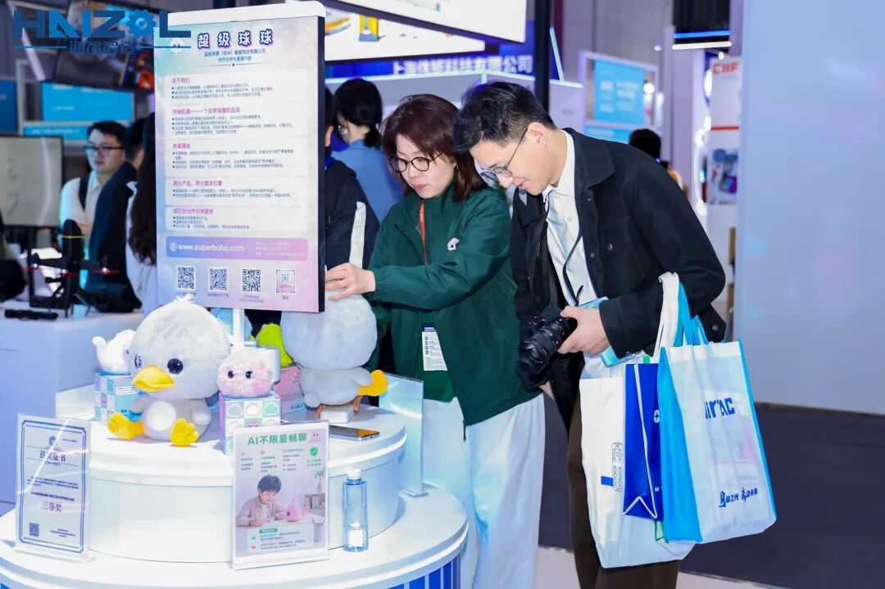
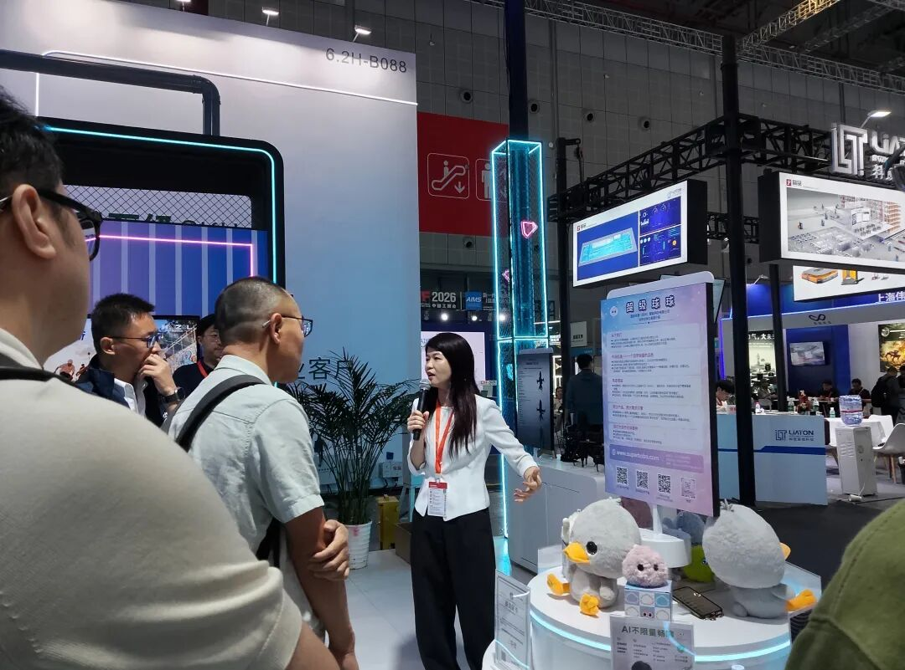
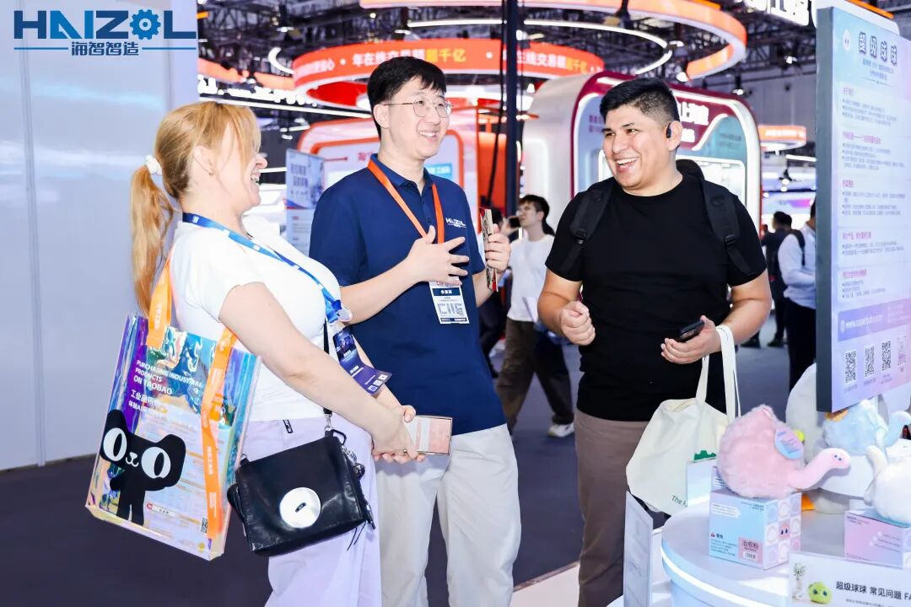
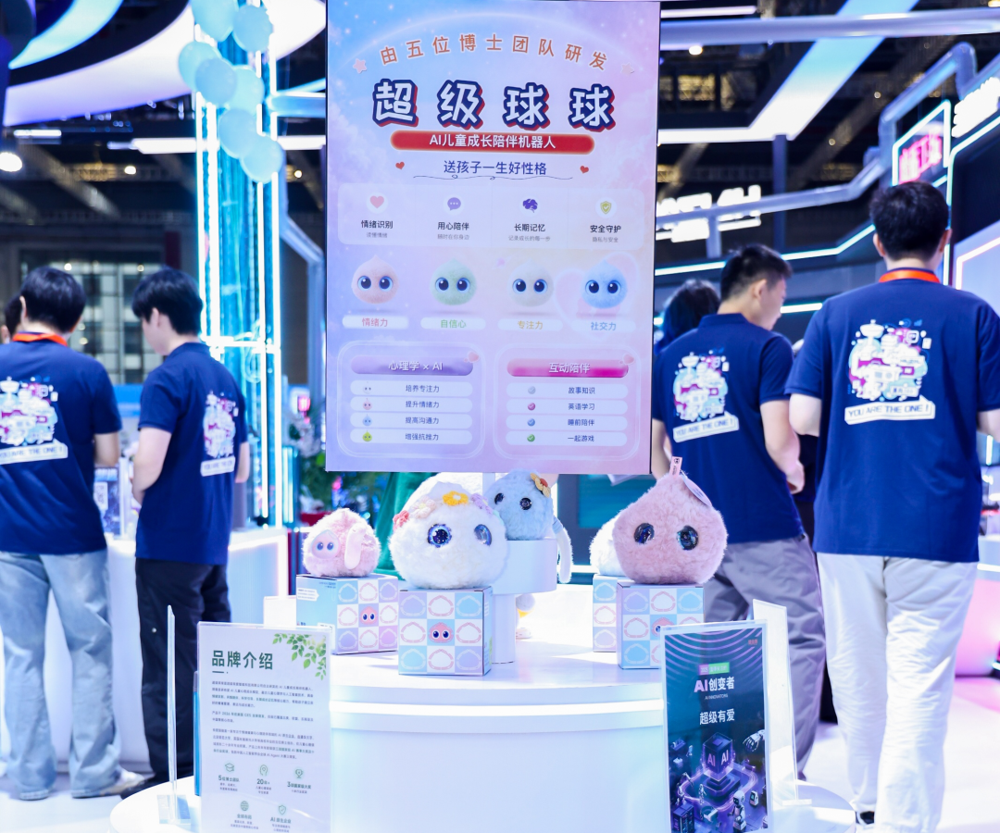
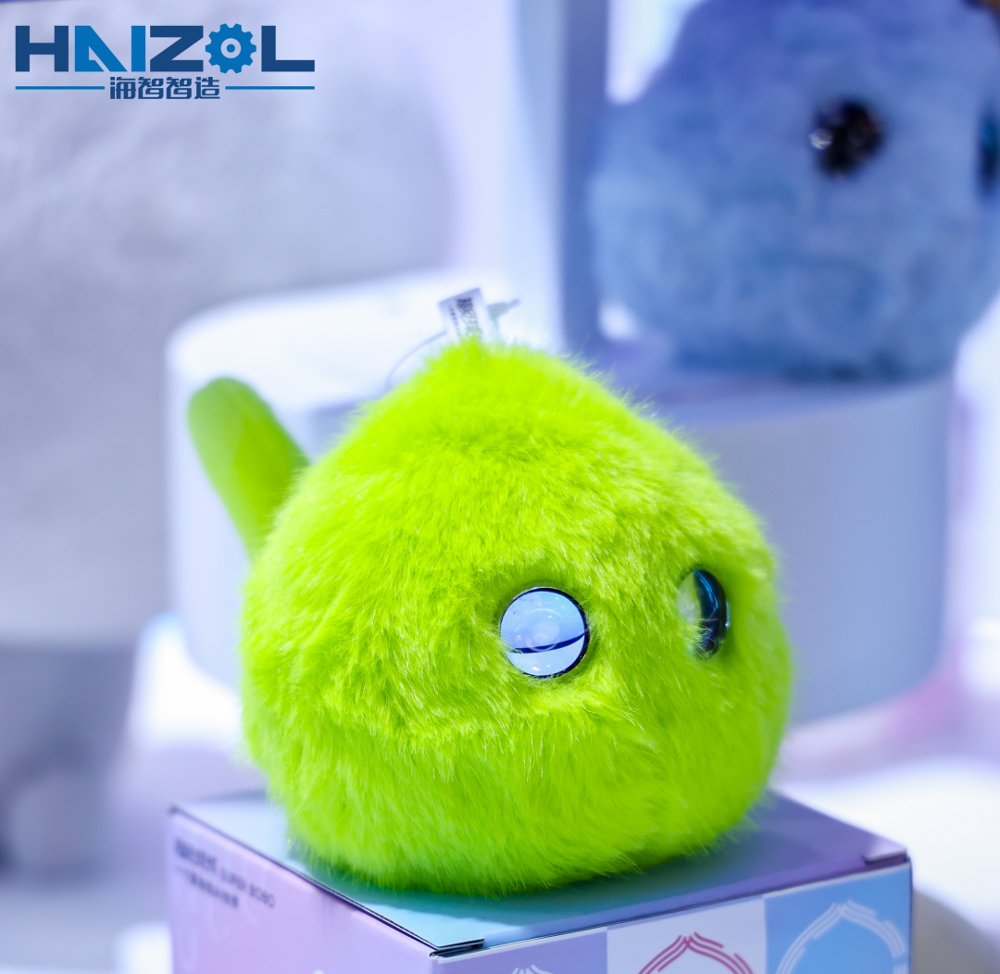
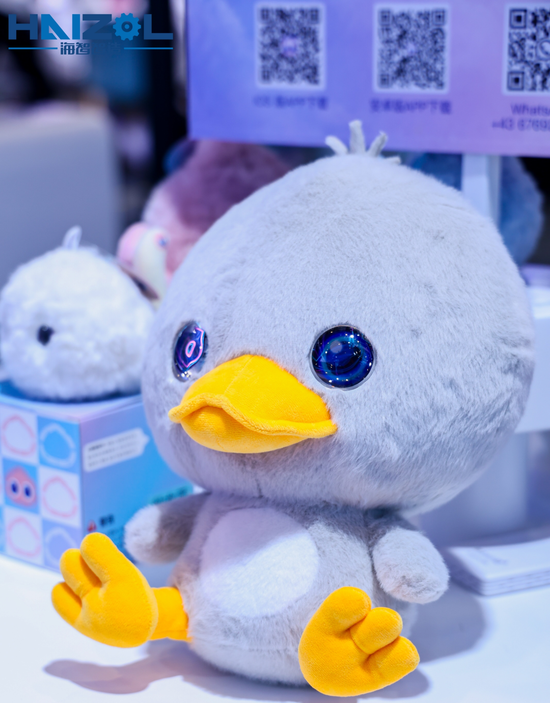
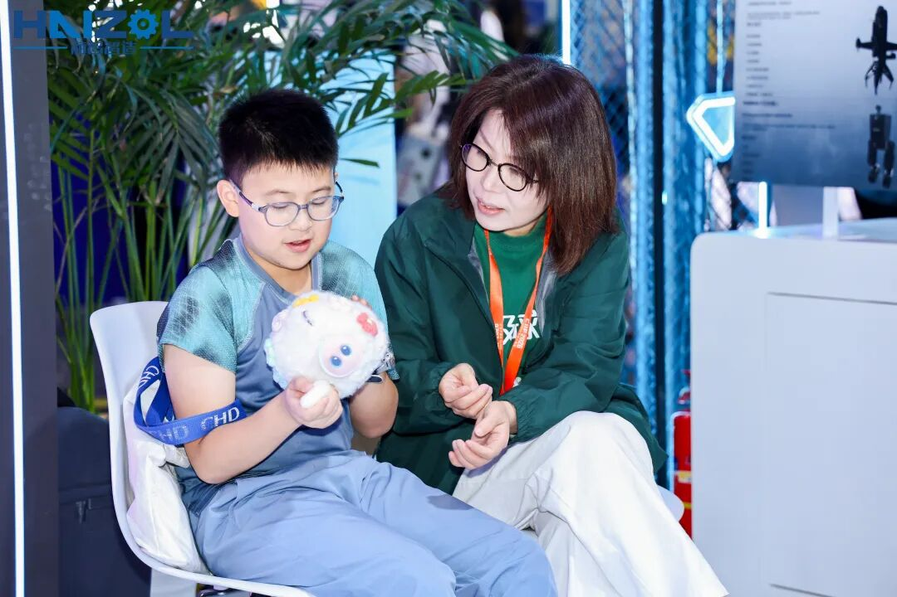
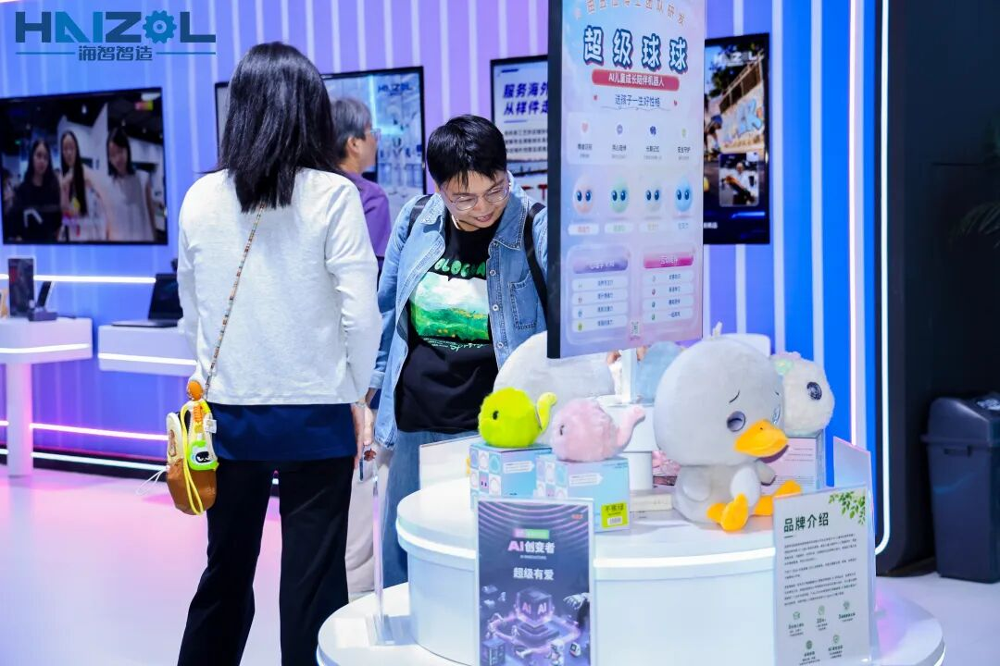
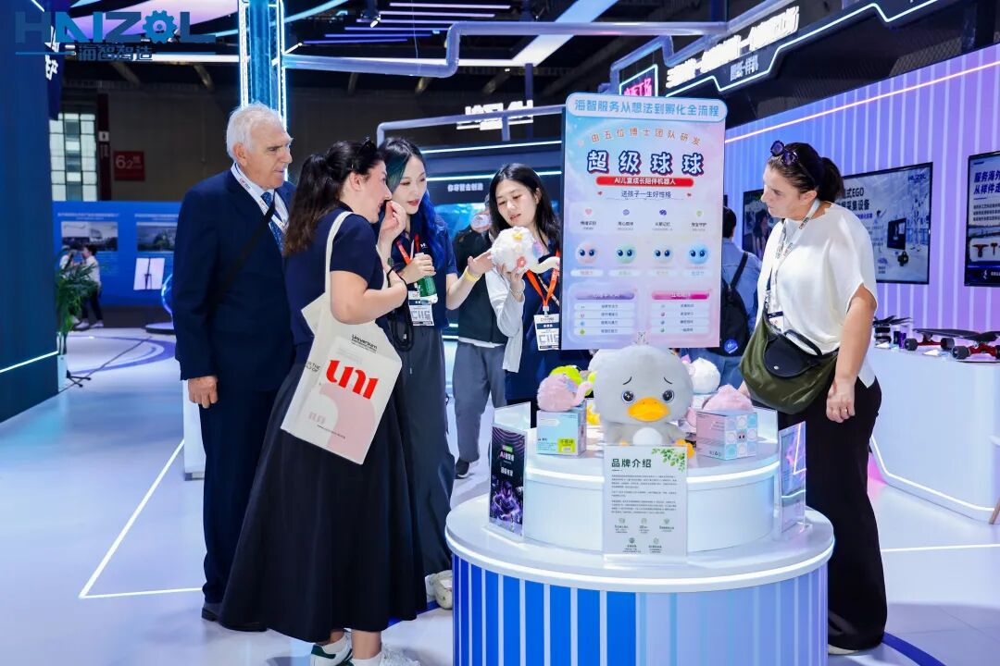
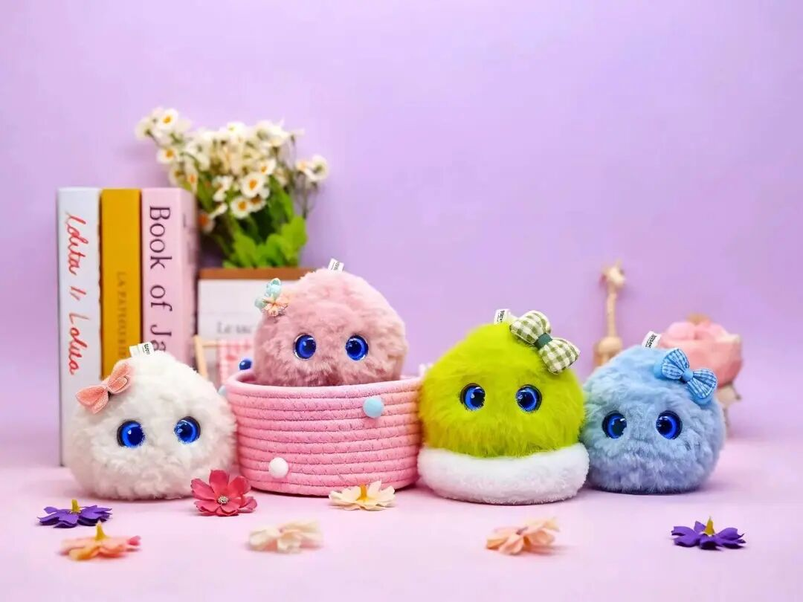

10月12日，上海。
当第26届中国国际工业博览会再次拉开大幕，6.2H馆的上海海智智造科技有限公司展位前，围满了举着手机的观众——他们镜头对准的，不是机械臂，不是工业母机，而是四只圆滚滚的小球、一只毛茸茸的大球，还有一只眼神有点忧郁的"丑小鸭"。
是的，超级有爱（杭州）智能科技有限公司带着超级球球家族，第一次站在了中国制造业顶级舞台的聚光灯下。而这一次能站上工博会，要特别感谢与我们并肩同行的伙伴——上海海智智造科技有限公司。作为超级有爱的合作方，上海海智智造科技有限公司在6.2H馆为中国制造业搭起了一座"从想法到产品"的桥，也让超级球球的第一次工博会之旅，有了一个温暖的起点。

01 为什么是工博会？
很多人会好奇：一个做AI儿童陪伴机器人的品牌，为什么出现在工业博览会上？
先说说这个展会的分量——
第26届中国国际工业博览会，10月12日—16日在国家会展中心（上海）举行，超3100家参展商、近300家世界500强企业、近800家专精特新企业齐聚，31万㎡展览规模，串联起制造业全产业链。这是经国务院批准的国家级展会，也是中国工业走向世界的一张名片。
能站上这个舞台的品牌，无一不是各自领域的"硬核选手"。而今年的工博会上，AI不再只是展厅里的关键词，它正在从工厂走向生活、走向家庭。超级球球此行，就是想让所有人看到：AI不只有钢铁般的力量，也可以有毛绒绒的温度。

02 并肩的伙伴：海智智造
超级球球能站上工博会，要感谢一位特别的伙伴——海智智造。
海智智造（上海海智智造科技有限公司）是超级有爱的合作方，也是我们此行同台亮相的伙伴。 它是一家面向全球的制造业供应链数智化平台，深耕制造业十一年，用AI大模型与智能体技术，把"一张图纸驱动供应链"变成现实——从概念验证、小试中试，到工程化、产业化，让好想法更快变成好产品。
本届工博会上，海智智造以600㎡展位特装亮相6.2H馆，带来了"魔砺工场""阵列工场""智能体工作台"，还把"一张图纸驱动供应链"的体验区向所有观众开放。硬核，也真诚。
理念相通，才有这次同行——海智智造用AI让制造更快，超级球球用AI让孩子更暖。 一边讲的是"让天下没有难造的产品"，一边讲的是"送孩子一生好性格"，但归根到底，我们做的是同一件事：让AI回到人身边，去解决真实的问题。
很荣幸，超级有爱能与这样一群踏实做事的人并肩同台。谢谢海智智造，让超级球球的第一次工博会，不是一个人的冒险。

03 我们是谁？——超级球球，送孩子一生好性格
先自我介绍一下。
超级有爱（杭州）智能科技有限公司，是一支由五位博士组成的团队打造的AI儿童成长陪伴机器人品牌。我们的明星产品，就是眼前这群毛茸茸的小家伙——超级球球。
它们不只是一只会说话的毛绒玩具，而是基于自研AI心理模型打造的AI儿童成长陪伴机器人。我们相信：比起灌给孩子多少知识，更重要的是陪TA养成一生的好性格——情绪力、自信心、专注力、社交力。
超级球球有四只性格各异的小球，对应孩子成长的四种底色：
情绪力：读懂情绪，温柔接住孩子的每一次小脾气
💚 抗挫力：在鼓励中，让孩子敢于表达、勇于尝试
🤍 专注力：把"再玩五分钟"变成"再学五分钟"
💙 表达力：教会分享与合作，交朋友不再难
还有那只静静坐在C位的大球，是超级球球家族的"大家长"，承载着更丰富的陪伴能力。


04 超级球球家族新伙伴：安徒生系列·丑小鸭AI双语启蒙机器人
这次工博会，我们特意带来了家族里最有故事的一位成员——安徒生系列·丑小鸭AI双语启蒙机器人。
它承载的，是每个孩子都该听过的那个故事：即使现在的你灰扑扑、不起眼，也终会长成优雅的白天鹅。丑小鸭不只是一只玩偶，它是安徒生童话精神的化身——接纳不完美的自己，相信成长的力量。
而它背后的硬核实力，才是我们敢带上工博会的底气：
✅ 丹麦政府授权，安徒生官方品牌正版丑小鸭IP——童话赋能成长，让经典故事真正"住进"孩子身边
✅ AI双语启蒙——中英文沉浸式启蒙，磨耳朵从第一声"Hello"开始
✅ 超级球球自研AI心理模型——双语情景对话＋童声纠音，孩子说得不对，它会温柔地示范
✅ AI情绪识别，共情陪伴——读懂孩子内心，培养自信
✅ 儿童专属语音交互＋长期记忆——它记得孩子叫什么、喜欢什么故事，个性化启蒙而非千篇一律
✅ 无屏幕、零蓝光——短毛防过敏材质，触摸感应互动，抱起来就是一只安心的玩偶
✅ 全内容安全审核——睡前故事、分龄安徒生双语故事库，云端持续更新，家长放心交付
在"AI要有温度"这件事上，我们比谁都较真。

05 展会现场：孩子们不肯走的展位
展期里，超级球球展位可能是6.2H馆最"软"的一角，也是最热闹的一角。
有小朋友抱着球球不撒手，和它聊了好久的天；有家长蹲在展位前认真研究"AI心理模型到底怎么读懂孩子"；还有来自世界各地的观众，用不太标准的中文对丑小鸭说"你好"，然后被它流利的中英双语逗笑。
一位带着孩子体验的妈妈说："我以为它是玩具，结果孩子跟它聊了十几分钟，还主动跟孩子讲了丑小鸭的故事。"
——这正是我们想看到的：技术退到幕后，陪伴站在台前。



05未来展望：让每一个孩子，都被AI温柔以待
工博会不是终点，而是超级球球走向更大舞台的起点。
接下来超级有爱会持续做有温度的AI——
不是把技术堆得更高，而是让它离孩子更近一点：听得懂一句含糊的童言，接得住一次小小的情绪，记得住那些容易被大人忽略的细节。让技术退到幕后，让陪伴留在台前。
这条路没有捷径，只有耐心。我们会一直认真地做下去——让AI不只有钢铁般的力量，也有毛绒绒的温度；让每一个孩子，都能被温柔以待。
丑小鸭的故事告诉我们：每一只白天鹅，都曾经是别人眼里不起眼的丑小鸭。
而超级球球想做的，就是陪孩子走过这段"还不那么闪闪发光"的日子，直到TA展翅的那一天。

🦆 找到我们
官网：www.superbobo.com
超级有爱（杭州）智能科技有限公司
感谢2026中国国际工业博览会，
感谢每一位来到6.2H-B088展位的朋友。
下一站，我们继续带着爱与AI出发。